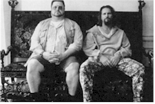
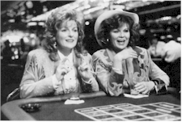

48th Berlin International
Film Festival (1998)
feature by Eddie
Cockrell
Halfway Home
Day six (16 February) of the 48th Berlin International Film Festival, mid-morning. As this is written the press is at the flagship Zoo Palast theater watching Danish director Nils Malmros' Barbara in the competition section; buyers are scurrying among the dozen or so screening rooms in the market section (usually spending only a few minutes in each film; Joel and Ethan Coen are preparing for an onslaught of press interviews in the posh Intercontinental Hotel a day after their new film The Big Lebowski played to a rapt press corps; and every available inch of table space is occupied by somebody with festival documentation spread out before them, frantically calculating start times, running times, and whether their passes get them in to that hot Chinese film or a trip to the ticket line is necessary. In other words, the story of the 1998 Berlinale so far is business – and pleasure – as usual.
"Good, very good," are the rushed words from Heinz Badewitz, characterizing the reception to date of his New German Cinema sidebar program, which includes 30 of the best and most successful films from last year's production. And then he's gone in the crowd, presumably back to the cinema to conduct an interview with a filmmaker or chase down a missing film print.
Panorama director Wieland Speck takes just a bit longer to answer the same inquiry, proudly directing the questioner to a number of films on the blown up schedule he's got taped to the wall outside one of his venues. Speck can be like that, all stream-of-consciousness enthusiasm and an unflagging energy to help his audiences gather as much information as possible about the films on offer.
And that, really, is the splendid secret of the men and women who prepare the Berlin Film Festival. Whether for commerce or art, the hundreds of films here have been organized and presented in a manner that makes the necessarily defeating task of choosing what to see as easy as possible. Sure, this festival has it's own peculiar challenges – most of them regarding rapidly diminishing available space and the logistics of the big move to Potsdamer Platz two years hence – but other than some long walks from hotel to press center to market center to cinemas Berlin runs the very best an event this size possibly can.
And, as usual, the principal challenge facing the beleaguered moviegoer is time: one needs to organize accreditation, make sure modem connections match up (forget about keeping up with e-mail), arrange interviews and meetings, track down and chat up colleagues that can only be seen once or twice a year in person, make appearances at the various receptions one is invited to (usually two or three a day) and, if possible, eat and sleep.
Once in a while one also has time to go to the movies. Thus far in the festival there's no clear front-runner in the competition section, with lukewarm press responses to Jacques Doillon's Too Much (Little) Love and Nick Hurran's Girls' Night. Of more interest were Hayao Miyazaki's animated Princess Mononoke and Walter Salles' Central Station. As usual, the high-profile Hollywood fare gets the most attention, with generally positive reviews for Jim Sheridan's The Boxer (with the director complaining in a print interview that American audiences just didn't seem to care about the issues in the film), Gus Van Sant's Good Will Hunting and The Big Lebowski. Still to come: Jackie Brown (Quentin Tarantino is supposed to be here, although word has it he'll avoid one-on-one interviews in favor of the cattle-call press conference), Wag the Dog, The Gingerbread Man, Great Expectations and John Grisham's The Rainmaker.
The anticipated star power has yet to fully materialize, although almost all of the competition film's directors have conducted press conferences and individual interviews with journalists from around the globe. And so far everybody's been generally well-behaved, with few of the shenanigans engaged in by stars in previous years. Probably the funniest quip so far can be credited to The Big Lebowski co-star John Goodman. Yesterday during his press conference a foreign journalist asked the ample actor whether he wanted to get serious and move away from his comedic "big boy" image. Without missing a beat, Goodman soberly revealed his desire to play a "small woman." Press conferences usually bring out the jokester in most stars.
The Berlin International Film Festival runs through 22 February, and future reports will focus on international acquisitions and individual film reviews. With only a few hours remaining before the premiere of Same Old Song – the first film by French master Alain Resnais in five years – it's time to get something to eat. Business as usual at the Berlinale.